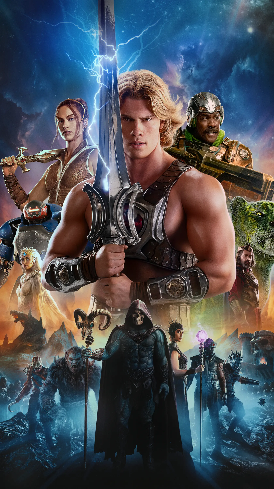

← Voltar para os filmesAÇÃO • FANTASIA
Mestres do Universo
Quinze anos depois de encontrar a Espada do Poder, Adam retorna a Eternia, agora dominada por Esqueleto, e precisa aceitar seu destino como He-Man para salvar seu mundo.

Quinze anos depois de encontrar a Espada do Poder, Adam retorna a Eternia, agora dominada por Esqueleto, e precisa aceitar seu destino como He-Man para salvar seu mundo.